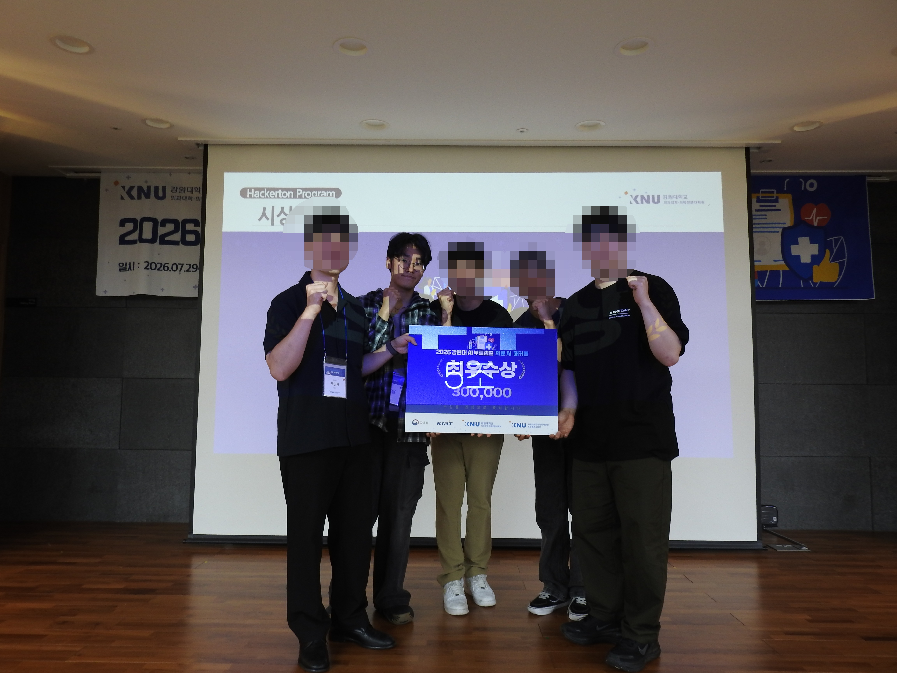
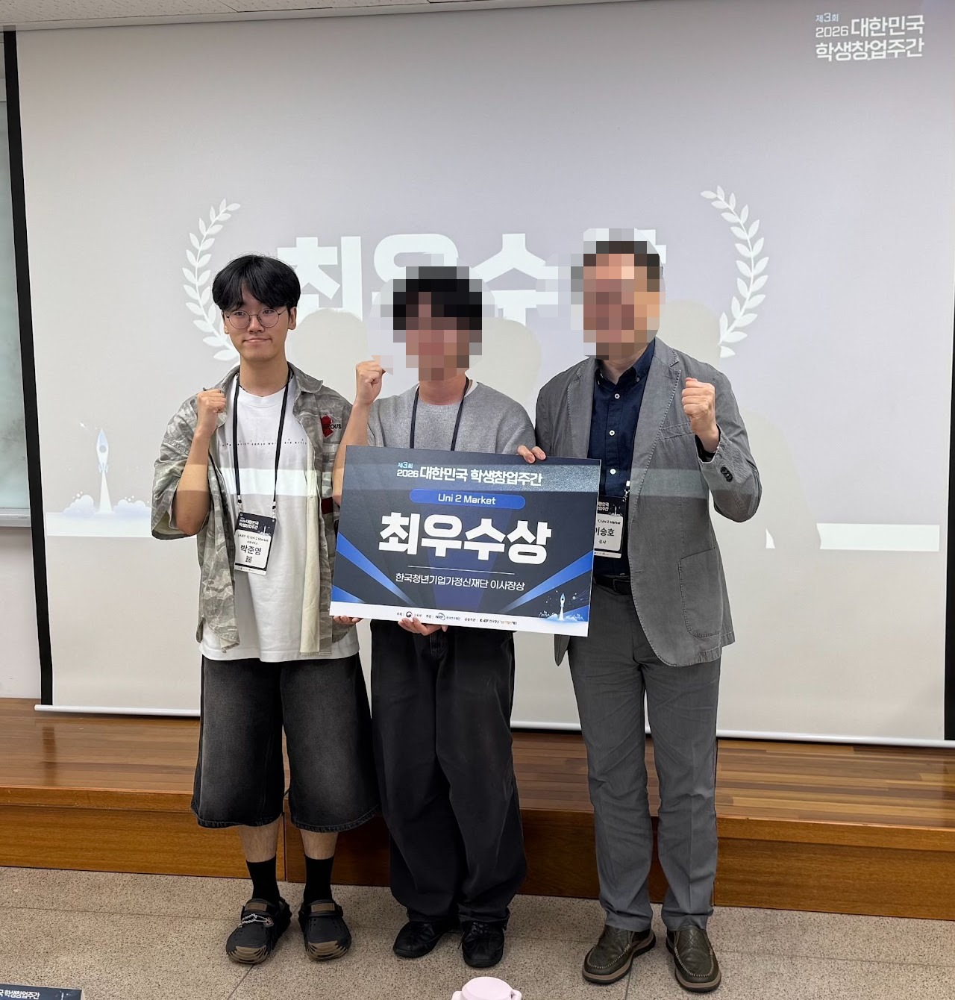

2026 MEDICAL AI HACKATHON의료 AI 해커톤
의료 AI 해커톤
최우수상 1위
대장내시경 용종 의심 영역을 실시간으로 분할하는 의료 컴퓨터 비전 프로젝트로 강원대학교 AI 부트캠프 의료 AI 해커톤에서 최우수상을 수상했습니다.
PROJECT HISTORY
연구와 프로젝트 기록입니다.
AWARD HISTORY
수상 기록을 한눈에 확인할 수 있습니다.
목록이 길어지면 이 영역 안에서 스크롤됩니다.

대장내시경 용종 의심 영역을 실시간으로 분할하는 의료 컴퓨터 비전 프로젝트로 강원대학교 AI 부트캠프 의료 AI 해커톤에서 최우수상을 수상했습니다.

윤동건·박준영 팀이 교육부 주관 제3회 대한민국 학생창업주간의 Uni 2 Market에서 최우수상을 수상했습니다.
AWARD DETAIL
2026 MEDICAL AI HACKATHON대장내시경 용종 의심 영역을 실시간으로 분할하는 의료 컴퓨터 비전 프로젝트로 강원대학교 AI 부트캠프 의료 AI 해커톤에서 최우수상을 수상했습니다.
실시간 대장내시경 용종 의심 영역 분할
SegFormer-B0 기반 Medical AI · Computer Vision
2026 의료 AI 해커톤 최우수상 · 1위